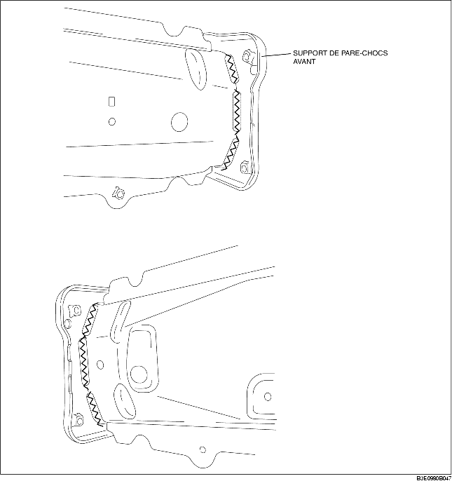

DEPOSER DE SUPPORT DE PARE-CHOCS AVANT
B3E098053896B01
1. Déposer le support de pare-chocs avant.
Attention
• Seule la procédure concernant le côté gauche est décrite. Mais la forme du côté droite est différente.
